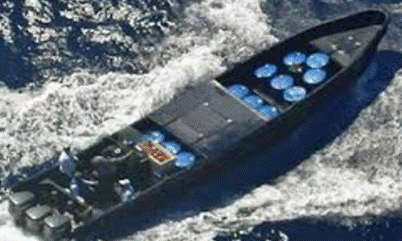
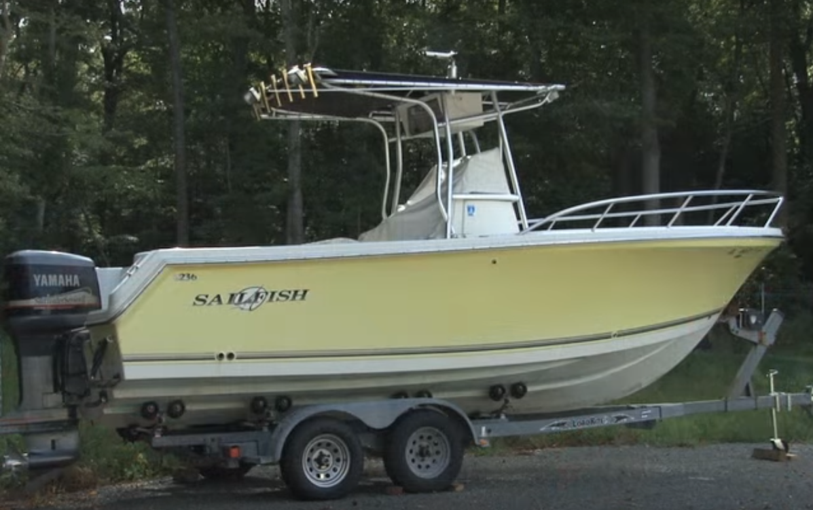
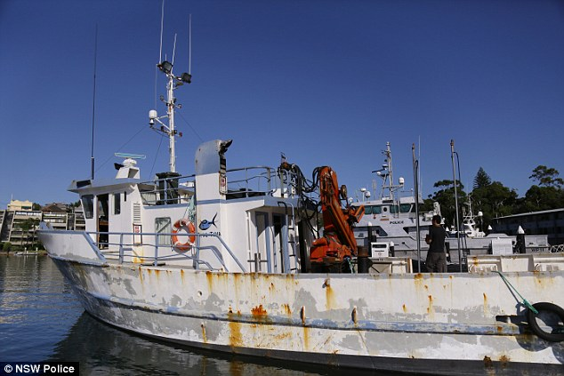

Go-fast speed boats – most common type of vessel used for smuggling in this area. Extremely fast, but very limited ability to operate in deep water or bad weather. Low profile design and minimal radar signature means that assets almost always must be within a couple of miles to visually detect them. Can be caught by Helicopter Interdiction Tactical Squadron (HITRON), but because of their speed, they are hard to intercept with just regular Navy and Coast Guard vessels like destroyers and cutters. A single go-fast boat can be carrying drugs with a final value in excess of $100 million.
(Go-fast speed boat typical characteristics: Length - 20 to 50 ft; Max Speed - 25 to 80 knots)
Recreational watercraft boats – comprised of a variety of different types of general use boats. Cannot typically operate in rough seas.
(Recreational watercraft boat characteristics: Length - 12 to 45 ft; Max Speed - 8 to 20 knots)
Fishing boats – Can operate in wide range of weather and sea conditions. Larger boats of this type are relatively easy to detect using radar. Their longer range and greater seaworthiness makes them the preferred vessel for smuggling routes that go further offshore and longer distances.
(Fishing boat typical characteristics: Length - 30 to 50 ft; Max Speed - 5 to 30 knots)